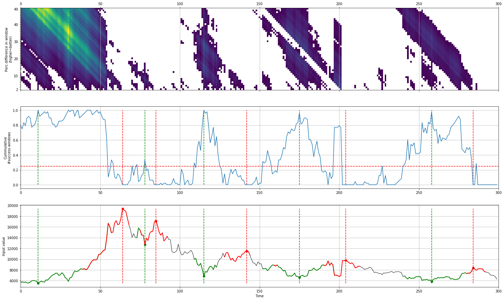

caerus’s documentation!
caerus is Python package to compute the local-minima with the corresponding local-maxima within the given time-frame.
This approach is designed to for stock-market valley and peak detection.
Here are just a few of the things that caerus does well:
Detects peaks and valleys in complex trends.
Insightful plots.
Parameter gridsearch.
Designed for trend movements such as as in stockmarket data.
 |
You contribution is important
If you ❤️ this project, star this repo at the github page and have a look at the sponser page!
Github
Please report bugs, issues and feature extensions at github.
Content
Installation
Tutorials
Documentation
Quick install
pip install caerus